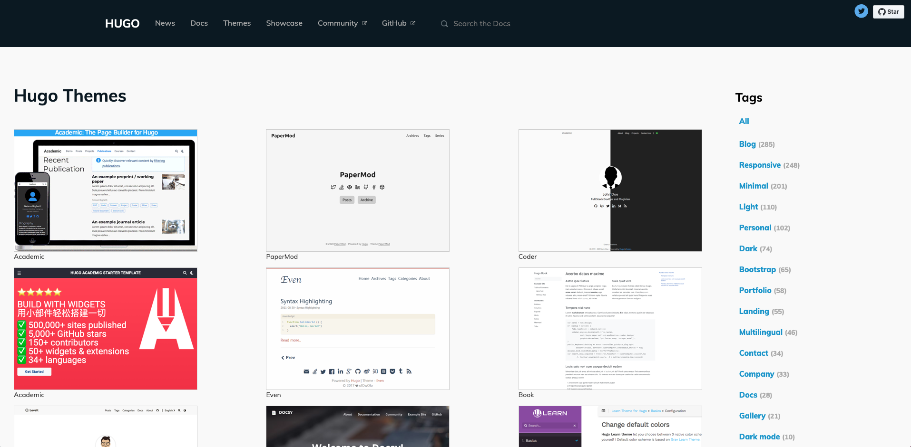
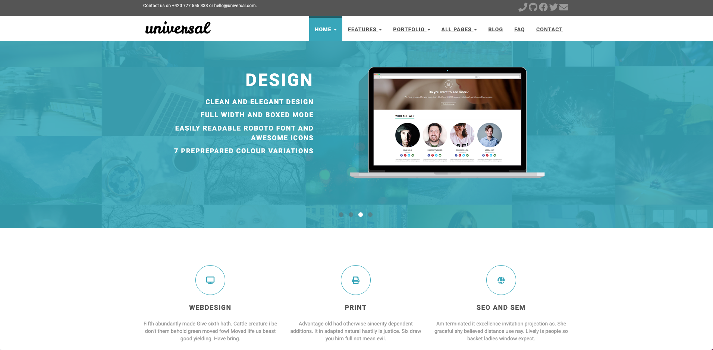

你有个人网站吗？
在自媒体时代，人人都在不断向互联网等不同媒介输出内容，如：博客、微博以及抖音等，并在特定领域，依靠于广大社交媒体/平台，如：CSDN、掘金、知乎、InfoQ 等等，发表着自己的心得、学习经历、日常生活等。随着内容的不断输出，总有一些时候，你会想寻找一块“互联网自留地”，“为所欲为”，或是想要进行一些完整而非碎片化的记录，或者想要避免无穷无尽的内容审查，又或者你只是不喜欢社交平台那杂乱的界面和不必要的互动，此时拥有一个个人网站总是一个更好的选择。
提起个人网站，你或许心中一震，钱呢？服务器呢
今天我就和大家分享一种不花钱、不要独立服务器，也能搞起个人网站的方法。
1、需求分析
个人网站，主要是用来记录属于个人的东西，将内容以最直接方式呈现给大家，其中文字、图片占比最多，基本不存在其它用户的注册场景。
对于个人网站，大家主要有以下方面的思考：
-
网站系统：自己从头写？搞个开源的自己改？花钱买吗？
-
网站维护：不懂网站的搭建、维护等操作，毕竟对于一个正规网站其本身的维护就是一门学问。对于个人而言，即使能力允许，但精力肯定是不允许。
-
服务器：搞个个人网站，还得每年承担服务器的费用，随着时间的推移，你可能就不太愿意再花钱买了。（10年前的我，曾这么搞过，最终以失败告终。）
因此，有没有对技术要求不高、不花钱、也能长久维护下来的个人建站方法呢？
答案是肯定的，接下来我就沿着这个思路一探究竟，让你轻松创建属于个人的免费站点。
2、站点规划
面对上述的需求，很早以前就有人这么干了，将静态站点作为一种最佳的选择，使你无需掌握过多的前端技术就能轻松搞定。
通过参考众多优秀的个人站点，我最终选择以 Github Pages + Hugo 的方式来搭建属于自己的个人网站。
-
Hugo：由 Go 语言实现的静态网站生成器，简单、易用、高效、易扩展、快速部署。只需在本地编写 markdown 文件，即可完成日常文章的维护。
-
Github Pages：是一个静态站点托管服务，直接将个人、组织或项目的页面托管于 GitHub 仓库中。（关键是不花钱，用来将个人站点资源存放于此。）
3、开始建站
接下来，看看如何一步一步地为自己搭建一个个人网站吧！
3.1 Hugo 搭建
3.1.1 安装 Hugo
-
参考 Hugo 官方的安装指南。
参考：Quick Install。
根据你的操作系统，选择对应的安装方式。例如，我是 macOS, 则直接用
brew命令快速安装：brew install hugo如果你是 Windows 或者其他操作系统，则可选择二进制文件安装，到 Hugo Releases 下载对应的 Hugo 二进制文件，直接安装即可。
-
Hugo 确认。
安装完成后，输入以下命令确认：
hugo version正常输出结果，则说明 Hugo 安装成功。
3.1.2 新建 Hugo 网站
本步骤是在本地创建个人站点工程（即：hugo 网站源文件）。
-
新建 Hugo 站点。
在本地选择合适的目录，执行 hugo 站点创建命令
hugo new site <site-dir>，例如：(“hugo-site-demo” 为本示例而创建的 demo，并非 https://xcbeyond.cn 实际站点。)
xcbeyond@xcbeyonddeMacBook-Pro github % hugo new site hugo-site-demo Congratulations! Your new Hugo site is created in /Users/xcbeyond/github/hugo-site-demo. Just a few more steps and you're ready to go: 1. Download a theme into the same-named folder. Choose a theme from https://themes.gohugo.io/ or create your own with the "hugo new theme <THEMENAME>" command. 2. Perhaps you want to add some content. You can add single files with "hugo new <SECTIONNAME>/<FILENAME>.<FORMAT>". 3. Start the built-in live server via "hugo server". Visit https://gohugo.io/ for quickstart guide and full documentation. -
Hugo 站点目录查看。
进入站点目录
hugo-site-demo，默认文件目录结构如下：│-config.toml ├─archetypes ├─content ├─data ├─layouts ├─static └─themes-
config.toml : 网站的配置文件，可配置网站名称、关键字、插件等。
-
content : 文章存放目录。
-
themes : 网站主题存放目录。
-
static : 静态资源存放目录, 如：图片、样式文件、脚本文件等。
作为以写作为主打的博主, 知道以上目录的含义, 现在就可以开始写作了.
-
3.1.3 选择 Hugo 主题
为了让你的站点更好看，可根据个人喜欢选择你喜欢的主题。
-
可以在 Hugo Themes 中选择自己喜欢的主题。

-
将选择的主题下载到本地 hugo 站点主题目录下。
以 Universal 为例进行说明。
切换到本地 hugo 站点的主题目录 themes，下载主题。
xcbeyond@xcbeyonddeMacBook-Pro hugo-site-demo % cd themes xcbeyond@xcbeyonddeMacBook-Pro themes % git clone https://github.com/devcows/hugo-universal-theme.git Cloning into 'hugo-universal-theme'... remote: Enumerating objects: 2386, done. remote: Counting objects: 100% (1108/1108), done. remote: Compressing objects: 100% (474/474), done. remote: Total 2386 (delta 516), reused 930 (delta 393), pack-reused 1278 Receiving objects: 100% (2386/2386), 10.76 MiB | 3.52 MiB/s, done. Resolving deltas: 100% (1270/1270), done.
3.1.4 配置站点
根据主题中的说明进行配置，一般主题中都有站点示例。
（不同主题配置略有差异，具体以主题中说明为准。）
下面以主题 Universal 为例说明。
-
将主题 hugo-universal-theme 中示例站点 exampleSite 文件夹的内容，全部复制到你的站点根目录。
xcbeyond@xcbeyonddeMacBook-Pro hugo-site-demo % cp -r themes/hugo-universal-theme/exampleSite/ ./ -
修改站点配置文件 config.toml
在 Hugo 网站文件夹的根目录下，打开 config.toml 文件，修改主题的正确路径，需将配置
themesDir = "../.."注释掉。修改站点的 baseurl，可修改为你的 Github Pages 地址，如：https://xcbeyond.github.io。
baseurl = "https://xcbeyond.github.io" # Configure URL. if using gh-pages https://github.com/<username>/hugo-universal-theme URL: https://<username>.github.io/hugo-universal-theme/ title = "Hugo 示例站点" theme = "hugo-universal-theme" # themesDir = "../.." languageCode = "en-us" ……更多 config.toml 配置说明可参考 Configure Hugo 和 主题Universal配置。
3.1.5 本地预览
-
启动 Hugo server。
执行命令
hugo serve：xcbeyond@xcbeyonddeMacBook-Pro hugo-site-demo % hugo serve Start building sites … hugo v0.85.0+extended darwin/arm64 BuildDate=unknown | EN -------------------+------ Pages | 43 Paginator pages | 0 Non-page files | 0 Static files | 105 Processed images | 0 Aliases | 17 Sitemaps | 1 Cleaned | 0 Built in 40 ms Watching for changes in /Users/xcbeyond/github/hugo-site-demo/{archetypes,content,data,layouts,static,themes} Watching for config changes in /Users/xcbeyond/github/hugo-site-demo/config.toml Environment: "development" Serving pages from memory Running in Fast Render Mode. For full rebuilds on change: hugo server --disableFastRender Web Server is available at http://localhost:1313/ (bind address 127.0.0.1) Press Ctrl+C to stop -
在浏览器中打开 http://localhost:1313 预览。

恭喜你，个人站点本地搭建成功！
3.1.6 创建文章
日常站点文件，都是采用 markdown 文件进行维护。例如，创建一篇新文件。
-
切换到站点 hugo-site-demo 目录下。
-
执行命令
hugo new <xxx.md>，创建一个 about 页面。xcbeyond@xcbeyonddeMacBook-Pro hugo-site-demo % hugo new about.md /Users/xcbeyond/github/hugo-site-demo/content/about.md createdabout.md 自动生成到了 content/about.md ，打开 about.md:
--- title: "About" date: 2021-12-05T20:40:17+08:00 draft: true ---这是 markdown 格式，
---之间的内容用于设置文章的属性内容，---下面就是正文部分。
3.2 站点部署
本地已经搭建好啦，接下来如何对外发布呢？
Github 是绝对的最佳选择。
为了确保个人站点文章（markdown 文件）的相对安全，采取将站点源码仓库和站点分开，即：站点源码仓库设置为私有，站点 GitHub Pages 仓库设为公开。
3.2.1 推送站点源码仓库
将本地站点 hugo-site-demo 推送到自己的 github 上。
-
注册一个 GitHub 账号。如果你已有账号，直接登录。如果没有账号，注册并登录。
-
新建 仓库，如：hugo-site-demo。
注：hugo-site-demo 为示例仓库，故设置为公开仓库，实践中建议设置为私有仓库。
-
从 github 将 hugo-site-demo 下载到本地。
可选择与本地 hugo-site-demo 不相同的目录，将 github 上新建的仓库克隆到本地。
git clone https://github.com/xcbeyond/hugo-site-demo.git -
将本地站点源码复制到本地github库，并提交、推送到 github。
3.2.2 创建 GitHub Pages
利用 GitHub Pages 来作为个人对外站点。
-
打开 GitHub Pages 官网，浏览并了解 User or organization site 部分对应的操作步骤。
GitHub Pages: https://pages.github.com
-
新建一个 GitHub repository，库名为
<username>.github.io，其中 username 是你的 GitHub 账号。例如：xcbeyond.github.io。
3.2.3 自动化部署
利用 Github Actions实现将站点源文件（如：hugo-site-demo）自动化部署到 GitHub Pages （如：xcbeyond.github.io ）上。
创建 Github Actions 文件。
在站点源文件根目录，创建 .github/workflows/deploy.yml 文件：
# This is a basic workflow to help you get started with Actions
name: hugo-deploy-CI
# Controls when the action will run.
on: push
# A workflow run is made up of one or more jobs that can run sequentially or in parallel
jobs:
# docs：https://github.com/peaceiris/actions-gh-pages
deploy:
runs-on: ubuntu-18.04
steps:
- name: Git checkout
uses: actions/checkout@v2
- name: Setup hugo
uses: peaceiris/actions-hugo@v2
with:
hugo-version: '0.81.0'
extended: true
- name: Build
run: hugo
- name: Deploy
uses: peaceiris/actions-gh-pages@v3
with:
personal_token: ${{ secrets.PERSONAL_TOKEN }}
external_repository: xcbeyond/xcbeyond.github.io # 修改为自己的地址
publish_dir: ./public
# keep_files: true
publish_branch: master
cname: xcbeyond.cn # 如有独立域名，修改为自己的域名
其中，on: push 表示提交时触发 Action，自动编译并部署到 GitHub Pages。
以后每次提交个人站点内容时，会自动编译并部署。
4、总结
个人网站的创建、部署、上线已经完成，为确保站点持续运转，需要你的精心维护、优化。站点功能的完善、好看，还需持续优化，可通过添加 Hugo 插件、修改主题样式等一系列方法完成。